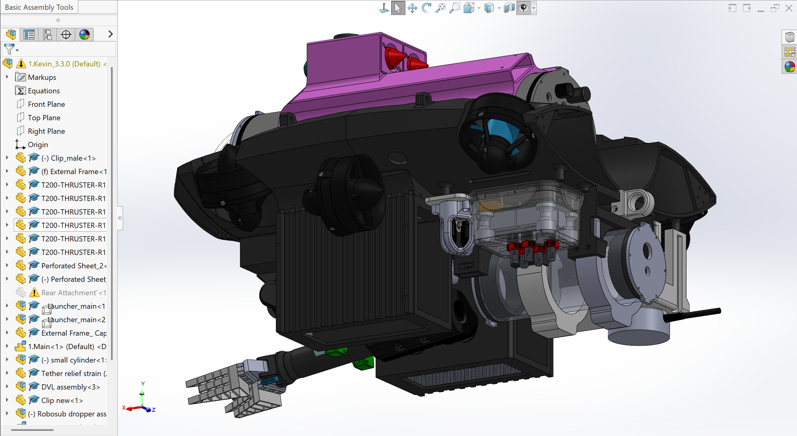
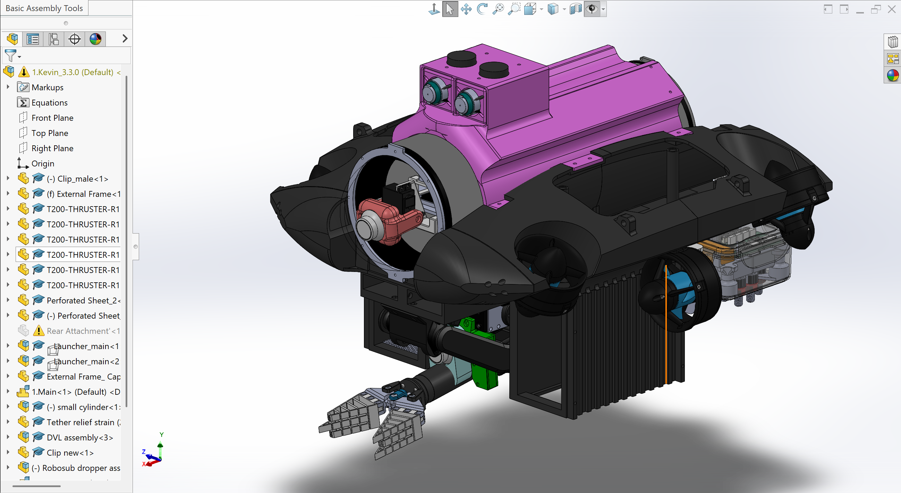
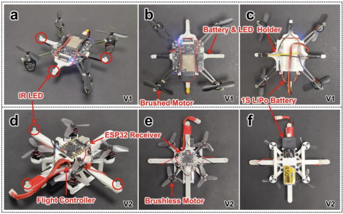

AUV: soft gripper & hydrophone unit
I designed the AUV’s soft gripper and hydrophone unit, shown here within the complete vehicle assembly.
Explore my contributionA collection of design studies
Exploring how parts come together, structures carry loads, and mechanisms move.
Explore selected work
01 — Selected work
Four studies across different scales
and mechanical challenges.

I designed the AUV’s soft gripper and hydrophone unit, shown here within the complete vehicle assembly.
Explore my contributionA repeating hinged frame that brings panel deployment and compact packaging into the same mechanism.
See the mechanismFrom aircraft layout and control surfaces to wing loading and fuselage structural analysis.
Read the design study Watch the control surfaces
Two hardware configurations exploring motor selection, electronics placement and battery mounting.
Compare the iterationsX-525 / Control-surface studies
Four close-up CAD animations.
Play, pause or inspect each movement.
Inside the work / X-525
The aircraft study connects the outer form to an internal load-bearing structure: wing spars, ribs and stringers, followed by fuselage frames and longerons.
ANSYS Mechanical APDL models examine wing bending at 2.5g and the displacement of a pressurized fuselage section.
Open the design report PDF ↗Selected model details
Wing load caseFixed-root model with loads applied at rib locations
Fuselage longeronsDistributed at 15° intervals around the cross-section
Fuselage sectionQuarter-section model using two symmetry planes
Design-study parameters from the supplied report. Simulation results describe the stated models and load cases.
02 — Design approach
The questions that connect
these different projects.
Consider the structure, component interfaces and space around moving parts. Use the assembly to make their relationships visible.
Layout & integrationCompare configurations and inspect the motion of linked components, from folding panels to aircraft control surfaces.
Kinematics & iterationTranslate geometry into a defined load case. Make assumptions visible, inspect deformation and identify areas for further evaluation.
Modelling & analysis03 — Connect
My contribution: I designed the soft gripper and hydrophone unit for this autonomous underwater vehicle (AUV). The CAD assembly views provide context for these subsystem designs within the complete vehicle, including its frame, thrusters and equipment enclosures.
Front view · Underside viewThe panel mechanism continuously unfolds and folds alongside the drone integration view.
Open the unfolding and folding GIF · Folded viewAircraft layout, wing structures, fuselage construction and finite element models are documented in the supplied report.
Read the report · Watch the aircraft animationThe supplied comparison labels V1 with brushed motors and a 1S LiPo battery, and V2 with brushless motors, an ESP32 receiver and flight controller.
View the comparison